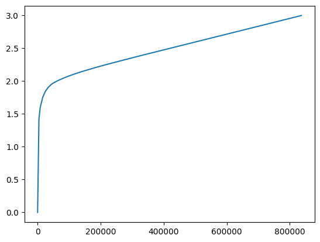
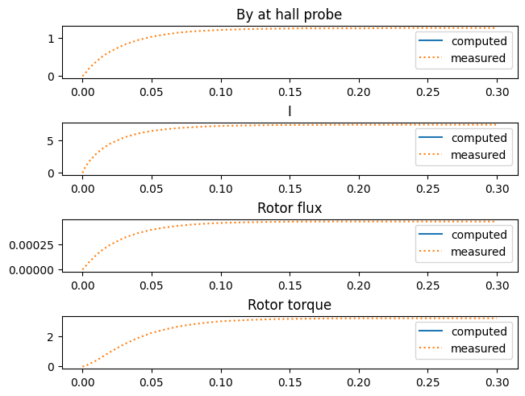

3. Team 24 - Nonlinear Time-Transient Rotational Test Rig#
From: https://www.compumag.org/wp/wp-content/uploads/2018/06/problem24.pdf
from netgen.occ import *
from ngsolve import *
from ngsolve.webgui import *
3.1. Geometry#
symmetric = True
mm = 1e-3
r_outer = 209*mm/2
r_inner = r_outer - 21.4*mm
height = 25.4*mm
stator_ring = Cylinder((0,0,-height/2),Z,r_outer,height) - Cylinder((0,0,-height/2),Z,r_inner,height, mantle="cyl_inner")
stator_block = Box((-27.8/2*mm, -r_inner, -height/2), (27.8/2*mm, r_inner, height/2))
# Set "helper" facenames to easily find fillet edges later
stator_block.faces.Min(X).name = "block"
stator_block.faces.Max(X).name = "block"
stator_block -= Cylinder((0,0,-height/2),Z,107.5/2*mm, height)
stator = stator_ring + stator_block
edges = stator.faces["block"].edges * stator.faces["cyl_inner"].edges
stator = stator.MakeFillet(edges, 3*mm)
# Reset helper face names
stator.faces["cyl_inner|block"].name = None
stator.faces.col = (0.8,0.8,0.8)
stator.solids.name = "stator"
r_inner = 50.8*mm/2
r_outer = r_inner + 12.7*mm
rotor_ring = Cylinder((0,0,-height/2),Z,r_outer,height, mantle="cyl_outer") - Cylinder((0,0,-height/2),Z,r_inner,height)
rotor_block = Box((-25.4*mm/2, -100*mm, -height/2), (25.4*mm/2, 100*mm, height/2)) * Cylinder((0,0,-height/2),Z,102.1*mm/2, height, mantle="rotor_end")
rotor_block.faces.Min(X).name = "block"
rotor_block.faces.Max(X).name = "block"
rotor_block -= Cylinder((0,0,-height/2),Z,r_inner, height)
rotor = rotor_ring + rotor_block
edges = rotor.faces["block"].edges * rotor.faces["cyl_outer"].edges
rotor = rotor.MakeFillet(edges, 3*mm)
rotor.faces.col = (0,0.37, 0.42)
search_coil_y = rotor.vertices.Max(Y).p[1]
search_coil = Glue([Segment((-25.4*mm/2, search_coil_y-8.7*mm, -height/2), (25.4*mm/2, search_coil_y-8.7*mm, -height/2)),
Segment((25.4*mm/2, search_coil_y-8.7*mm, -height/2), (25.4*mm/2, search_coil_y-8.7*mm, height/2)),
Segment((25.4*mm/2, search_coil_y-8.7*mm, height/2), (-25.4*mm/2, search_coil_y-8.7*mm, height/2)),
Segment((-25.4*mm/2, search_coil_y-8.7*mm, height/2), (-25.4*mm/2, search_coil_y-8.7*mm, -height/2))])
search_coil.edges.name = "search_coil"
search_coil.edges.col = (1,0,0)
rotor = Glue([rotor, search_coil])
rotor = rotor.Rotate(Axis((0,0,0), Z), -22)
rotor.faces["cyl_outer|block"].name = None
rotor.solids.name = "rotor"
coil = Box((-34/2*mm-24*mm, -17*mm/2, -24*mm-31*mm/2), (34/2*mm+24*mm, 17*mm/2, 31*mm/2 + 24*mm))
coil -= Box((-34/2*mm, -17*mm/2, -31*mm/2), (34/2*mm, 17*mm/2, 31*mm/2))
edges = ListOfShapes([coil.edges.Min(X+Z),coil.edges.Max(X+Z),coil.edges.Min(X-Z),coil.edges.Max(X-Z)])
coil = coil.MakeFillet(edges, 24*mm)
coil.faces.col = (0.72,0.45,0,2)
cut1 = HalfSpace((-34/2*mm, 0,0), X)
cut2 = HalfSpace((34/2*mm, 0,0), X)
cut1.faces.col = (0,0,0,0)
cut2.faces.col = (0,0,0,0)
c1 = coil * cut1
c2 = coil - cut1
c2.solids.name = "coil_mid"
c1.solids.name = "coil_left"
coil = Glue([c1, c2])
c3 = coil - cut2
c3.solids.name = "coil_right"
coil = Glue([coil*cut2, c3])
cut3 = HalfSpace((0, 0,-31*mm/2), Z)
cut4 = HalfSpace((0, 0,31*mm/2), Z)
cut3.faces.col = (0,0,0,0)
cut4.faces.col = (0,0,0,0)
c4 = coil * cut3
for s in c4.solids:
s.name += "_bottom"
c5 = coil - cut3
c6 = c5 * cut4
for s in c6.solids:
s.name += "_mid"
c7 = c5 - cut4
for s in c7.solids:
s.name += "_top"
coil = Glue([c4, c6, c7])
coil.solids.maxh=0.01
coil1 = coil.Move((0,63*mm,0))
for s in coil1.solids:
s.name += "_1"
coil2 = coil.Move((0,-63*mm,0))
for s in coil2.solids:
s.name += "_2"
airbox_size = 400*mm
airbox_height = 300*mm
air = Box((-airbox_size/2, -airbox_size/2, -airbox_height/2), (airbox_size/2, airbox_size/2, airbox_height/2))
air.faces.name = "outer"
air.faces.col = (0,0,0.3,0.2)
air.solids.name = "air"
shape = Glue([stator, rotor, coil1, coil2, air])
if symmetric:
sym = HalfSpace((0,0,0), (0,0,1))
sym.faces.name = "sym"
sym.faces.col = (0.5,0.5,0.5,0.5)
shape = shape * sym
shape.WriteStep("motor.step")
Draw(shape, euler_angles=(-50,0,30))
BaseWebGuiScene
3.2. Mesh#
geo = OCCGeometry(shape)
pole_end = (0.0139, 0.0519216, -0.0127)
shift = (-6.5e-3, -1.3e-3, 7.7e-3)
hall_point = tuple(p + s for p, s in zip(pole_end, shift))
mp = meshsize.moderate
mp.RestrictH(*hall_point, 0.0001)
mesh = Mesh(geo.GenerateMesh(mp, closeedgefac=0.1, maxh=0.02))
mesh.Curve(5)
print("Number of elements:", mesh.ne)
Draw(mesh, euler_angles=(-50,0,30), clipping={"z":-1, "dist":0.1})
Number of elements: 31053
BaseWebGuiScene
3.3. Current Density#
coilrect_xmin, coilrect_xmax = -34*mm/2, 34*mm/2
coilrect_zmin, coilrect_zmax = -31*mm/2, 31*mm/2
Jtau = mesh.MaterialCF({ "coil_left_bottom.*" : (coilrect_zmin-z, 0, x-coilrect_xmin),
"coil_mid_bottom.*" : (1,0,0),
"coil_right_bottom.*" : (coilrect_zmin-z, 0, x-coilrect_xmax),
"coil_right_mid.*" : (0,0,1),
"coil_left_mid.*" : (0,0,-1),
"coil_left_top.*" : (coilrect_zmax-z, 0, x-coilrect_xmin),
"coil_mid_top.*" : (-1,0,0),
"coil_right_top.*" : (coilrect_zmax-z, 0, x-coilrect_xmax)},
default=(0,0,0))
J_coil = Jtau * 1/Norm(Jtau)
Draw(J_coil, mesh, clipping={"pnt":(0,63*mm,0), "vec": (0,1,0)}, euler_angles=[-60,0,20], draw_surf=False, vectors={"grid_size":400})
BaseWebGuiScene
3.4. FESpace#
graddoms = [ 1 if mat in ("stator", "rotor") else 0 for mat in mesh.GetMaterials() ]
order = 3
hcurl = HCurl(mesh, order=order, dirichlet="sym", gradientdomains=graddoms)
number = NumberSpace(mesh, definedon=mesh.Materials("coil.*"))
fes = hcurl * number
(u, I), (v, It) = fes.TnT()
4. Material Parameters#
mu0 = 1.257e-6
B = [0, 1.413, 1.594, 1.751, 1.839, 1.896, 1.936, 1.967, 2.008, 2.042, 2.073, 2.101, 2.127, 2.151, 2.197, 2.240, 2.281, 2.321, 2.361, 2.400, 2.472]
h = [0, 00.400, 00.801, 01.601, 02.402, 03.203, 04.003, 04.804, 06.405, 08.007, 09.608, 11.210, 12.811, 14.412, 17.615, 20.818, 24.020, 27.223, 30.426, 33.629, 39.634]
# extend data by high value
H = [1e4*hi for hi in h]
H.append(H[-1] + (H[-1]-H[-2])/(B[-1]-B[-2])*(1000-B[-1]))
B.append(1000)
bh = BSpline(2, [0] + B, H)
import matplotlib.pyplot as plt
import numpy as np
# test evaluation of bspline
bvals = np.linspace(0, 3, 1000)
plt.plot([bh(bi) for bi in bvals], bvals)
B = curl(u)
normB = sqrt(B * B + 1e-20)
nu = mesh.MaterialCF( { "rotor|stator" : bh(normB)/normB }, default=1/mu0)
sigma = mesh.MaterialCF( {"stator|rotor" : 4.54e5 }, default=0)
N = 350 # number of turns
S = 24*17*mm**2 # coil cross-section

tau = 0.005
uold = GridFunction(hcurl)
a = BilinearForm(fes)
a += nu * (curl(u) * curl(v) + 1e-6 * u * v) * dx
a += sigma/tau * (u-uold) * v * dx
a += -N/S * I * J_coil * v * dx("coil.*", bonus_intorder=10)
voldom = Integrate(1, mesh.Materials("coil.*"))
# actually \int E = \int (u-uold)/tau must be multiplied by 2
# multiplying the voldom is the same and keeps symmetry
if symmetric:
voldom *= 2 # for symmetry
U = 23.1
R = 3.09 # Ohm
a += tau/voldom * (-R*I-U) * It * dx("coil.*", bonus_intorder=5)
a += - N/S * J_coil * (u-uold) * It * dx("coil.*", bonus_intorder=6)
c = Preconditioner(a, type="bddc", inverse="sparsecholesky")
# c = Preconditioner(a, type="direct", inverse="pardiso")
u = GridFunction(fes)
uprime = GridFunction(hcurl)
uold.vec[:] = 0.0
res = u.vec.CreateVector()
w = u.vec.CreateVector()
times = [0]
By_vals = [0]
I_vals = [0]
rotor_flux = [0]
torque = [0]
from IPython.display import display, clear_output
measured_t = [0, 0.002, 0.005, 0.010, 0.015, 0.020,
0.030, 0.040, 0.050, 0.060, 0.070, 0.080,
0.090, 0.100, 0.120, 0.140, 0.160, 0.180,
0.200, 0.240, 0.300]
measured_By = [0, 0.07, 0.21, 0.38, 0.53, 0.64, 0.82, 0.94, 1.03,
1.09, 1.14, 1.17, 1.19, 1.21, 1.23, 1.24, 1.25,
1.25, 1.25, 1.26, 1.26]
measured_I = [0, 0.91, 1.80, 2.95, 3.82, 4.49, 5.45, 6.05, 6.45,
6.71, 6.91, 7.04, 7.15, 7.22, 7.31, 7.36, 7.38, 7.40,
7.40, 7.41, 7.41]
measured_rotor_flux = [0, 0.29, 0.77, 1.44, 1.99, 2.44, 3.11, 3.58, 3.91, 4.14, 4.31, 4.43, 4.52, 4.58, 4.65, 4.69, 4.71, 4.72, 4.72, 4.72, 4.72]
measured_rotor_flux = [1e-4*val for val in measured_rotor_flux]
measured_torque = [0, 0.02, 0.17, 0.39, 0.68, 0.96, 1.48, 1.9, 2.24, 2.48, 2.68, 2.82, 2.93, 3.02, 3.11, 3.17, 3.19, 3.21, 3.22, 3.22, 3.22]
scene = Draw(curl(u.components[0]), mesh, draw_surf=False, clipping={"pnt" : (0,0,-0.1*mm), "vec" : (0,0,-1)}, vectors={"grid_size":300})
scene_J = Draw(sigma*uprime, mesh, draw_surf=False, clipping={"pnt" : (0,0,-0.1*mm),"vec" : (0,0,-1)}, vectors={"grid_size":500})
from ngsolve.nonlinearsolvers import NewtonSolver
from ngsolve.krylovspace import CGSolver
tend = 0.3
hall_probe = mesh(*hall_point)
plt.ion()
fig, axs = plt.subplots(4, 1, constrained_layout=True)
# relative error
plot_by, = axs[0].plot(times, By_vals, label="computed")
axs[0].plot(measured_t, measured_By, label="measured", linestyle=":")
axs[0].set_title("By at hall probe")
axs[0].legend()
plot_i, = axs[1].plot(times, I_vals, label="computed")
axs[1].plot(measured_t, measured_I, label="measured", linestyle=":")
axs[1].set_title("I")
axs[1].legend()
plot_flux, = axs[2].plot(times, rotor_flux, label="computed")
axs[2].plot(measured_t, measured_rotor_flux, label="measured", linestyle=":")
axs[2].set_title("Rotor flux")
axs[2].legend()
plot_torque, = axs[3].plot(times, torque, label="computed")
axs[3].plot(measured_t, measured_torque, label="measured", linestyle=":")
axs[3].set_title("Rotor torque")
axs[3].legend()
plt.ioff()
plt.show()
with TaskManager():
t = 0
a.AssembleLinearization(u.vec)
solver = CGSolver(a.mat, c, maxiter=1000, tol=1e-4, printrates=True)
newton = NewtonSolver(a, u, solver=solver)
while t < tend:
t = t + tau
uold.vec.data = u.components[0].vec
newton.Solve(maxerr=1e-8, printing=True)
uprime.vec.data = 1/tau * u.components[0].vec - 1/tau * uold.vec
times.append(t)
B = curl(u.components[0])
by = B(hall_probe)[1]
I = -u.components[1].vec[0]
flux_rotor = Integrate(u.components[0] * specialcf.tangential(3), mesh, definedon=mesh.BBoundaries("search_coil"))
B_vol = BoundaryFromVolumeCF(mesh.MaterialCF({"air": B}))
n = specialcf.normal(mesh.Materials("rotor"))
rotation = CF((-y,x,0))
maxwell_stress = 1/mu0 * (OuterProduct(B_vol, B_vol) - 0.5 * (B_vol * B_vol) * Id(3))
torq = Integrate(maxwell_stress * n * rotation, mesh, definedon=mesh.Materials("rotor").Boundaries() * mesh.Materials("air").Boundaries())
if symmetric:
flux_rotor *= 2
torq *= 2
torque.append(torq)
rotor_flux.append(flux_rotor)
By_vals.append(by)
I_vals.append(I)
plot_by.set_ydata(By_vals)
plot_i.set_ydata(I_vals)
plot_flux.set_ydata(rotor_flux)
plot_torque.set_ydata(torque)
for plot in (plot_by, plot_i, plot_flux, plot_torque):
plot.set_xdata(times)
for ax in axs:
ax.relim()
plt.draw()
clear_output(wait=True)
print("t = ", t)
print("By = ", by)
print("I = ", I)
print("rotor flux = ", flux_rotor)
print("torque: ", torque[-1])
display(fig)
scene.Redraw()
scene_J.Redraw()

Newton iteration 0
CG iteration 1, residual = 1.0033730216340018e-05
CG iteration 2, residual = 2.9113383406270983e-05
CG iteration 3, residual = 9.207242739098016e-05
CG iteration 4, residual = 0.0002276977238028494
CG iteration 5, residual = 0.0005837816114596143
CG iteration 6, residual = 0.0009896221828576564
CG iteration 7, residual = 0.0020174270769784015
CG iteration 8, residual = 0.0018674122645929098
CG iteration 9, residual = 0.0037412155100474635
CG iteration 10, residual = 0.006297147197627464
CG iteration 11, residual = 0.006872635222157131
CG iteration 12, residual = 0.013468133831475172
CG iteration 13, residual = 0.02018148427252735
CG iteration 14, residual = 0.021839484368737616
CG iteration 15, residual = 0.03789535428825964
CG iteration 16, residual = 0.0608129635413833
CG iteration 17, residual = 0.07186860075073098
CG iteration 18, residual = 0.12156481477310262
CG iteration 19, residual = 0.213591447601427
CG iteration 20, residual = 0.3197399719843481
CG iteration 21, residual = 0.6326055043606414
CG iteration 22, residual = 19.76927003491098
CG iteration 23, residual = 0.5038510685235037
CG iteration 24, residual = 0.24657235592598253
CG iteration 25, residual = 0.1712387593305918
CG iteration 26, residual = 0.10744833859849977
CG iteration 27, residual = 0.06901582007926539
CG iteration 28, residual = 0.052652113107658195
CG iteration 29, residual = 0.03649634529459443
CG iteration 30, residual = 0.021079967832345014
CG iteration 31, residual = 0.015584939918939632
CG iteration 32, residual = 0.0125976017868238
CG iteration 33, residual = 0.007545048010206783
CG iteration 34, residual = 0.004882005095500513
CG iteration 35, residual = 0.0039602266989202115
CG iteration 36, residual = 0.002986968863059222
CG iteration 37, residual = 0.001815685586314774
CG iteration 38, residual = 0.0012158901908873453
CG iteration 39, residual = 0.000933126564019645
CG iteration 40, residual = 0.0006463752468742743
CG iteration 41, residual = 0.0003836153932970038
CG iteration 42, residual = 0.00027078401503498616
CG iteration 43, residual = 0.0002016025943629705
CG iteration 44, residual = 0.0001372880139777126
CG iteration 45, residual = 9.149869632456741e-05
CG iteration 46, residual = 6.822915384116236e-05
CG iteration 47, residual = 4.985529188732596e-05
CG iteration 48, residual = 3.10871158216198e-05
CG iteration 49, residual = 2.1978064252144924e-05
CG iteration 50, residual = 1.762559579773336e-05
CG iteration 51, residual = 1.190457295560125e-05
CG iteration 52, residual = 7.302781438497971e-06
CG iteration 53, residual = 5.274505714234131e-06
CG iteration 54, residual = 4.049565973200151e-06
CG iteration 55, residual = 2.730870384021882e-06
CG iteration 56, residual = 1.7060819124831619e-06
CG iteration 57, residual = 1.2041553677932858e-06
CG iteration 58, residual = 8.943277256397836e-07
CG iteration 59, residual = 5.738437582756126e-07
CG iteration 60, residual = 3.369041081433188e-07
CG iteration 61, residual = 2.1246020152824003e-07
CG iteration 62, residual = 8.788581012834996e-08
CG iteration 63, residual = 5.658951381679573e-08
CG iteration 64, residual = 1.2035028866984634e-07
CG iteration 65, residual = 2.895858495869832e-07
CG iteration 66, residual = 4.5399458111901183e-07
CG iteration 67, residual = 6.64245340077975e-07
CG iteration 68, residual = 9.726996912254006e-07
CG iteration 69, residual = 1.4731853986845207e-06
CG iteration 70, residual = 2.066822401488278e-06
CG iteration 71, residual = 2.831673921979233e-06
CG iteration 72, residual = 4.1993739090964865e-06
CG iteration 73, residual = 6.460360259869747e-06
CG iteration 74, residual = 8.863774530677543e-06
CG iteration 75, residual = 1.2137883805836414e-05
CG iteration 76, residual = 1.8049332058475276e-05
CG iteration 77, residual = 2.663353047152181e-05
CG iteration 78, residual = 3.594383138506637e-05
CG iteration 79, residual = 5.3895687990101295e-05
CG iteration 80, residual = 8.035152924738582e-05
CG iteration 81, residual = 0.00011109291356696538
CG iteration 82, residual = 0.00015448912099329292
CG iteration 83, residual = 0.00022687678553300565
CG iteration 84, residual = 0.0003474207879398271
CG iteration 85, residual = 0.00048049274864344396
CG iteration 86, residual = 0.0006710172966845329
CG iteration 87, residual = 0.0009532117534913094
CG iteration 88, residual = 0.0014444822411927105
CG iteration 89, residual = 0.0023638755478155343
CG iteration 90, residual = 0.0037542607740001176
CG iteration 91, residual = 0.008016967504261067
CG iteration 92, residual = 0.08854223890324613
CG iteration 93, residual = 0.00647742225973413
CG iteration 94, residual = 0.0031964515030929548
CG iteration 95, residual = 0.002083050707511892
CG iteration 96, residual = 0.0013547738072569983
CG iteration 97, residual = 0.0008845214158714408
CG iteration 98, residual = 0.0006203559176888815
CG iteration 99, residual = 0.00044836941073735244
CG iteration 100, residual = 0.0003128224733455879
CG iteration 101, residual = 0.00021628704246247707
CG iteration 102, residual = 0.00014926181004592948
CG iteration 103, residual = 0.00010544135017997835
CG iteration 104, residual = 7.43254074521306e-05
CG iteration 105, residual = 4.8777072815879605e-05
CG iteration 106, residual = 3.402261761433778e-05
CG iteration 107, residual = 2.381444197379069e-05
CG iteration 108, residual = 1.677956744704461e-05
CG iteration 109, residual = 1.1516065048689674e-05
CG iteration 110, residual = 8.335233087613786e-06
CG iteration 111, residual = 5.875827792740815e-06
CG iteration 112, residual = 3.884918044281435e-06
CG iteration 113, residual = 2.5952411359364025e-06
CG iteration 114, residual = 1.959910953681966e-06
CG iteration 115, residual = 1.3837581475062668e-06
CG iteration 116, residual = 9.285941920065291e-07
CG iteration 117, residual = 6.528215141815394e-07
CG iteration 118, residual = 4.777934405348951e-07
CG iteration 119, residual = 3.2566392478424733e-07
CG iteration 120, residual = 2.233045049549544e-07
CG iteration 121, residual = 1.5889842713270218e-07
CG iteration 122, residual = 1.124520544322379e-07
CG iteration 123, residual = 7.824086322065637e-08
CG iteration 124, residual = 5.199596034364604e-08
CG iteration 125, residual = 3.617388234734759e-08
CG iteration 126, residual = 2.6101291288522193e-08
CG iteration 127, residual = 1.8101280827981156e-08
CG iteration 128, residual = 1.171329867888529e-08
CG iteration 129, residual = 8.071984074469272e-09
CG iteration 130, residual = 5.889365602127789e-09
CG iteration 131, residual = 4.464217187009874e-09
CG iteration 132, residual = 2.918015363149176e-09
CG iteration 133, residual = 1.95285063940423e-09
CG iteration 134, residual = 1.4792282194016175e-09
CG iteration 135, residual = 1.0106520039034153e-09
CG iteration 136, residual = 6.934799651459299e-10
err = 0.1959017687725624
Newton iteration 1
CG iteration 1, residual = 0.00018539106005056887
CG iteration 2, residual = 6.362889132906258e-05
CG iteration 3, residual = 2.539111592160996e-05
CG iteration 4, residual = 2.144453350176341e-05
CG iteration 5, residual = 1.3283730803439929e-05
CG iteration 6, residual = 1.3098664202748258e-05
CG iteration 7, residual = 5.4264153623513585e-06
CG iteration 8, residual = 4.558115849863627e-06
CG iteration 9, residual = 3.456813757613374e-06
CG iteration 10, residual = 1.6732957170491997e-06
CG iteration 11, residual = 1.4380953023383492e-06
CG iteration 12, residual = 1.1139648588369184e-06
CG iteration 13, residual = 6.459625526765205e-07
CG iteration 14, residual = 4.5806878223194986e-07
CG iteration 15, residual = 3.7348731841908395e-07
CG iteration 16, residual = 2.5001836319662123e-07
CG iteration 17, residual = 1.4236240084582705e-07
CG iteration 18, residual = 1.1079861404957226e-07
CG iteration 19, residual = 9.120835930541477e-08
CG iteration 20, residual = 4.8932241561425566e-08
CG iteration 21, residual = 3.2558023046340984e-08
CG iteration 22, residual = 2.815181526146051e-08
CG iteration 23, residual = 1.5901367121210606e-08
err = 0.00016552714309493773
Newton iteration 2
CG iteration 1, residual = 4.33106686227611e-06
CG iteration 2, residual = 7.346079323969963e-07
CG iteration 3, residual = 1.3527803745254827e-06
CG iteration 4, residual = 4.225687482830048e-07
CG iteration 5, residual = 1.7500737064911427e-07
CG iteration 6, residual = 1.5079109175424126e-07
CG iteration 7, residual = 1.5823633118617395e-07
CG iteration 8, residual = 8.7946885972807e-08
CG iteration 9, residual = 4.812608125704868e-08
CG iteration 10, residual = 3.613890452185624e-08
CG iteration 11, residual = 2.447317888375469e-08
CG iteration 12, residual = 1.522360271048647e-08
CG iteration 13, residual = 1.2552014767060623e-08
CG iteration 14, residual = 1.0934654368956524e-08
CG iteration 15, residual = 7.364204911472309e-09
CG iteration 16, residual = 4.273168387932267e-09
CG iteration 17, residual = 2.4540589191398284e-09
CG iteration 18, residual = 1.8225394009003909e-09
CG iteration 19, residual = 1.242251061956253e-09
CG iteration 20, residual = 8.6683176353904e-10
CG iteration 21, residual = 7.079981198873757e-10
CG iteration 22, residual = 4.4052173776197894e-10
CG iteration 23, residual = 2.9928694161795796e-10
err = 3.902003413328879e-06
Newton iteration 3
CG iteration 1, residual = 3.7856741115538683e-06
CG iteration 2, residual = 6.006531557119884e-07
CG iteration 3, residual = 1.3453354881075488e-07
CG iteration 4, residual = 1.5357541325483276e-07
CG iteration 5, residual = 1.4332379512815642e-07
CG iteration 6, residual = 3.6495067782893914e-08
CG iteration 7, residual = 2.0106702216701207e-08
CG iteration 8, residual = 2.566171628437326e-08
CG iteration 9, residual = 1.9248633884946547e-08
CG iteration 10, residual = 8.541741781586091e-09
CG iteration 11, residual = 3.76963574772782e-09
CG iteration 12, residual = 2.6018099722138883e-09
CG iteration 13, residual = 2.2908638919177337e-09
CG iteration 14, residual = 2.1825616942478734e-09
CG iteration 15, residual = 1.3389196389685784e-09
CG iteration 16, residual = 7.235006928071597e-10
CG iteration 17, residual = 3.709599107545348e-10
err = 3.3601691734354854e-06
Newton iteration 4
CG iteration 1, residual = 3.5548593053449437e-06
CG iteration 2, residual = 5.595158229054401e-07
CG iteration 3, residual = 1.4440242698557652e-07
CG iteration 4, residual = 1.5954066307301173e-07
CG iteration 5, residual = 1.5358954511415654e-07
CG iteration 6, residual = 4.4383985188038655e-08
CG iteration 7, residual = 2.1903978124990026e-08
CG iteration 8, residual = 2.5825005759437296e-08
CG iteration 9, residual = 2.3701834825753404e-08
CG iteration 10, residual = 1.1144801519600319e-08
CG iteration 11, residual = 4.114758264699123e-09
CG iteration 12, residual = 2.9827977632777433e-09
CG iteration 13, residual = 2.6616155835690258e-09
CG iteration 14, residual = 2.35700424389211e-09
CG iteration 15, residual = 1.5343577290593764e-09
CG iteration 16, residual = 8.753507671784319e-10
CG iteration 17, residual = 4.532566416001267e-10
CG iteration 18, residual = 1.7855811369205447e-10
err = 3.16713884153554e-06
Newton iteration 5
CG iteration 1, residual = 3.579545604586945e-06
CG iteration 2, residual = 6.179083154078514e-07
CG iteration 3, residual = 1.239235584890123e-07
CG iteration 4, residual = 2.1433361150772329e-07
CG iteration 5, residual = 1.1567390015118064e-07
CG iteration 6, residual = 3.0201041522401975e-08
CG iteration 7, residual = 2.2197689629800675e-08
CG iteration 8, residual = 2.9718917629574708e-08
CG iteration 9, residual = 1.6772112769874432e-08
CG iteration 10, residual = 7.675066397343125e-09
CG iteration 11, residual = 3.067857884421209e-09
CG iteration 12, residual = 2.7786819892658004e-09
CG iteration 13, residual = 2.8673063600453295e-09
CG iteration 14, residual = 2.1684931957891734e-09
CG iteration 15, residual = 1.148052439569176e-09
CG iteration 16, residual = 3.936707100840952e-10
CG iteration 17, residual = 2.3108429876233108e-10
err = 3.1860595048472302e-06
Newton iteration 6
CG iteration 1, residual = 3.6832926857152956e-06
CG iteration 2, residual = 5.872288373036336e-07
CG iteration 3, residual = 1.2519927394429543e-07
CG iteration 4, residual = 1.8246934389255138e-07
CG iteration 5, residual = 1.3769740387229065e-07
CG iteration 6, residual = 3.419038194494117e-08
CG iteration 7, residual = 1.9555438054752252e-08
CG iteration 8, residual = 2.4370468281159057e-08
CG iteration 9, residual = 1.8783859959809014e-08
CG iteration 10, residual = 8.92186552342394e-09
CG iteration 11, residual = 2.9105921789889766e-09
CG iteration 12, residual = 2.6946305764204155e-09
CG iteration 13, residual = 2.336594595653388e-09
CG iteration 14, residual = 1.8051046887432991e-09
CG iteration 15, residual = 1.174515905529117e-09
CG iteration 16, residual = 6.253929130228551e-10
CG iteration 17, residual = 3.176580678392835e-10
err = 3.2347873599419056e-06
Newton iteration 7
CG iteration 1, residual = 3.6369958842885917e-06
CG iteration 2, residual = 5.885984291608688e-07
CG iteration 3, residual = 1.4248815369082154e-07
CG iteration 4, residual = 2.0107580952475024e-07
CG iteration 5, residual = 1.4264649904981438e-07
CG iteration 6, residual = 3.5639509180324115e-08
CG iteration 7, residual = 2.1473699779314424e-08
CG iteration 8, residual = 2.8643215959834283e-08
CG iteration 9, residual = 2.058689909501793e-08
CG iteration 10, residual = 8.909908872972599e-09
CG iteration 11, residual = 3.829456446510783e-09
CG iteration 12, residual = 2.949350617219423e-09
CG iteration 13, residual = 2.7226746629648487e-09
CG iteration 14, residual = 2.4825482610325352e-09
CG iteration 15, residual = 1.1450212012511866e-09
CG iteration 16, residual = 6.353549571845293e-10
CG iteration 17, residual = 4.314403202672876e-10
CG iteration 18, residual = 2.078798882670108e-10
err = 3.252048747066214e-06
Newton iteration 8
CG iteration 1, residual = 3.903781828711769e-06
CG iteration 2, residual = 7.861902607024188e-07
CG iteration 3, residual = 1.5776777229958902e-07
CG iteration 4, residual = 2.927586663627325e-07
CG iteration 5, residual = 1.59212340206626e-07
CG iteration 6, residual = 3.9354303862133874e-08
CG iteration 7, residual = 2.8737281053716343e-08
CG iteration 8, residual = 3.896674749778996e-08
CG iteration 9, residual = 2.109087977611751e-08
CG iteration 10, residual = 9.73735746002437e-09
CG iteration 11, residual = 3.644547598638723e-09
CG iteration 12, residual = 2.927415455522112e-09
CG iteration 13, residual = 2.807863441985598e-09
CG iteration 14, residual = 2.340010799106051e-09
CG iteration 15, residual = 1.4125118030482392e-09
CG iteration 16, residual = 4.969973177397186e-10
CG iteration 17, residual = 2.9980346501830614e-10
err = 3.454088555603251e-06
Newton iteration 9
CG iteration 1, residual = 4.124394053843368e-06
CG iteration 2, residual = 7.834770289840142e-07
CG iteration 3, residual = 1.668982628332186e-07
CG iteration 4, residual = 2.6730937490719244e-07
CG iteration 5, residual = 1.4192867972918827e-07
CG iteration 6, residual = 3.935380160104242e-08
CG iteration 7, residual = 2.6772188773102555e-08
CG iteration 8, residual = 3.552753190223946e-08
CG iteration 9, residual = 2.2235640897620318e-08
CG iteration 10, residual = 9.324546202570953e-09
CG iteration 11, residual = 3.2110142348286996e-09
CG iteration 12, residual = 3.3835245237523624e-09
CG iteration 13, residual = 2.983466654040942e-09
CG iteration 14, residual = 2.120353404260654e-09
CG iteration 15, residual = 1.2750626000143619e-09
CG iteration 16, residual = 6.575117484485119e-10
CG iteration 17, residual = 3.638411279063535e-10
err = 3.620910841027187e-06
Newton iteration 10
CG iteration 1, residual = 4.223087270383133e-06
CG iteration 2, residual = 7.947118889529447e-07
CG iteration 3, residual = 1.7007482849479266e-07
CG iteration 4, residual = 2.5948185328004586e-07
CG iteration 5, residual = 1.660014796981396e-07
CG iteration 6, residual = 4.537444705068011e-08
CG iteration 7, residual = 2.6747130736642845e-08
CG iteration 8, residual = 3.646517237887181e-08
CG iteration 9, residual = 2.470733972656861e-08
CG iteration 10, residual = 9.859332777249402e-09
CG iteration 11, residual = 4.1773771816486766e-09
CG iteration 12, residual = 3.0666305284072723e-09
CG iteration 13, residual = 3.019200740828451e-09
CG iteration 14, residual = 2.858837393398078e-09
CG iteration 15, residual = 1.2347238143630358e-09
CG iteration 16, residual = 7.173737205837164e-10
CG iteration 17, residual = 4.38475835451203e-10
CG iteration 18, residual = 2.3103810986061016e-10
err = 3.7202799712181847e-06
Newton iteration 11
CG iteration 1, residual = 4.330751418792891e-06
CG iteration 2, residual = 7.681047386728386e-07
CG iteration 3, residual = 1.6058790984944773e-07
CG iteration 4, residual = 2.752928135762457e-07
CG iteration 5, residual = 1.7267872241900452e-07
CG iteration 6, residual = 4.174845521086237e-08
CG iteration 7, residual = 2.5520793527546057e-08
CG iteration 8, residual = 3.496337014202811e-08
CG iteration 9, residual = 2.2801386522812122e-08
CG iteration 10, residual = 1.0940604810382693e-08
CG iteration 11, residual = 3.952170726997187e-09
CG iteration 12, residual = 3.238853853582701e-09
CG iteration 13, residual = 3.278802921977476e-09
CG iteration 14, residual = 2.479329901822984e-09
CG iteration 15, residual = 1.4690629338573172e-09
CG iteration 16, residual = 5.463472848081422e-10
CG iteration 17, residual = 2.957343009058138e-10
err = 3.844429556079036e-06
Newton iteration 12
CG iteration 1, residual = 4.575233732366205e-06
CG iteration 2, residual = 9.135066297462394e-07
CG iteration 3, residual = 1.7242372357245937e-07
CG iteration 4, residual = 2.922408502214777e-07
CG iteration 5, residual = 1.856426544261802e-07
CG iteration 6, residual = 4.7028017489850825e-08
CG iteration 7, residual = 2.7065466818749036e-08
CG iteration 8, residual = 3.469942730607032e-08
CG iteration 9, residual = 2.5391413103635578e-08
CG iteration 10, residual = 1.1623645199324613e-08
CG iteration 11, residual = 3.6950063681547633e-09
CG iteration 12, residual = 3.393579863512371e-09
CG iteration 13, residual = 3.1315450144793347e-09
CG iteration 14, residual = 2.5053881777202653e-09
CG iteration 15, residual = 1.5300613939735258e-09
CG iteration 16, residual = 6.931024609368915e-10
CG iteration 17, residual = 3.7509263182751466e-10
err = 3.995192226508427e-06
Newton iteration 13
---------------------------------------------------------------------------
KeyboardInterrupt Traceback (most recent call last)
Cell In[9], line 39
37 t = t + tau
38 uold.vec.data = u.components[0].vec
---> 39 newton.Solve(maxerr=1e-8, printing=True)
40 uprime.vec.data = 1/tau * u.components[0].vec - 1/tau * uold.vec
41 times.append(t)
File /Applications/Netgen.app/Contents/Resources/lib/python3.12/site-packages/netgen/__init__.py:56, in TimeFunction.<locals>.retfunc(*args, **kwargs)
54 def retfunc(*args,**kwargs):
55 with timer:
---> 56 ret = func(*args, **kwargs)
57 return ret
File /Applications/Netgen.app/Contents/Resources/lib/python3.12/site-packages/ngsolve/nonlinearsolvers.py:34, in NewtonSolver.Solve(self, maxit, maxerr, dampfactor, printing, callback, linesearch, printenergy, print_wrong_direction)
31 if printenergy:
32 print("Energy: ", a.Energy(u.vec))
---> 34 a.AssembleLinearization(u.vec)
35 a.Apply(u.vec, r)
37 self._UpdateInverse()
KeyboardInterrupt: